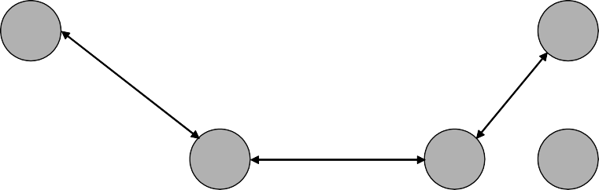
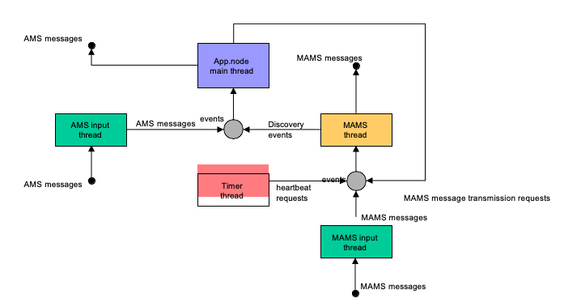

AMS Programmer's Guide
Version 3.0
Sky DeBaun, Jet Propulsion Laboratory, California Institute of Technology
Document Change Log | Ver No. | Date | Affected | Description| Comments | | ---- | --- | --- | --- |--- | | 2.2 | Sept 2010 | | | | | 3.0 | June 2023 | All | Updates and Corrections | |
Table of Content - AMS Programmer's Guide - The AMS Protocol - Purpose and Scope - Definitions - Overview - General - Architectural Elements - Overview of Interactions - The JPL Implementation - Primary Transport Services - Installation - Automake - Make - Support for the Expat XML Parsing Library - The AMS Daemon - "C" Application Programming Interface - Type and Macro Definitions - Module Management functions - Message Subscription and Invitation - Configuration Lookup - Message Issuance - Event (Including Message) Reception - User Event Posting - Remote AMS - Library - ramsgate - Management Information Base - MIB file syntax - A Sample MIB - Application Development - Overview - Compiling Custom AMS Applications - Running the Application - A Sample Application - Acknowledgment
The AMS Protocol
Purpose and Scope
The Consultative Committee for Space Data Systems\' (CCSDS) Asynchronous Message Service (AMS) is a communication architecture for data systems. It is designed to allow mission system modules to operate as if they were isolated, each producing and consuming mission information without explicit knowledge of the other active modules. This self-configuring communication relationship minimizes complexity in the development and operation of modular data systems.
AMS is the foundation of a system that can be described as a \'society\' of largely autonomous, interoperating modules. These modules can adapt over time in response to changing mission objectives, functional upgrades of modules, and recovery from individual module failures. The primary objective of AMS is to reduce mission cost and risk by providing a standard, reusable infrastructure for information exchange among data system modules. This infrastructure is designed to be user-friendly, highly automated, flexible, robust, scalable, and efficient.
Notably, AMS provides a publication and subscription service for both terrestrial and extraterrestrial communications, utilizing the Interplanetary Overlay Network (ION). This service ensures a seamless and efficient communication system that can adapt dynamically to various missions.
Definitions
Within the context of this document the following definitions apply:
A continuum is a closed set of entities that utilize AMS for purposes of communication among themselves. Each continuum is identified by a continuum name and corresponding non-negative continuum number. The continuum name that is the character string of length zero indicates "all known continua" or "any known continuum", whichever is less restrictive in the context in which this continuum name is used; the reserved continuum number zero corresponds to this continuum name.
An application is a data system implementation, typically taking the form of a set of source code text files, that relies on AMS procedures to accomplish its purposes. Each application is identified by an application name.
An authority is an administrative entity or persona that may have responsibility for the configuration and operation of an application. Each authority is identified by an authority name.
A venture is an instance of an application, i.e., a functioning projection of the application -- for which some authority is responsible -- onto a set of one or more running computers.
A message is an octet array of known size which, when copied from the memory of one module of a venture to that of another (exchanged), conveys information that can further the purposes of that venture.
The content of a message is the array of zero or more octets embedded in the message containing the specific information that the message conveys.
A role is some part of the functionality of an application. Each role is identified by a role name and corresponding non-negative role number. The role name that is the character string of length zero indicates 'all roles' or 'any role', whichever is less restrictive in the context in which the role name is used; the reserved role number zero corresponds to this role name. The role name "RAMS \'\' identifies Remote AMS (RAMS) gateway functionality as discussed below; the reserved role number 1 corresponds to this role name.
A module (of some mission data system) is a communicating entity that implements some part of the functionality of some AMS venture -- that is, performs some application role -- by, among other activities, exchanging messages with other modules. Associated with each module is the name of the role it performs within the application. [Note that multiple modules may perform the same role in an application, so the role name of a module need not uniquely identify the module within its message space.] In order to accomplish AMS message exchange a module generates AMS service requests and consumes AMS service indications; the module that is the origin of a given AMS service request or the destination of a given AMS service indication is termed the operative module.
A message space is the set of all of the modules of one AMS venture that are members of a single AMS continuum; that is, a message space is the intersection of a venture and a continuum. Each message space is uniquely identified within that continuum by the combination of the name of the application and the name of the authority that is responsible for the venture, and by a corresponding venture number greater than zero. [Note that unique naming of continua enables multiple message spaces that are in different continua but are identified by the same application and authority names to be concatenated via Remote AMS (discussed below) into a single venture.]
A unit (i.e., a unit of organization) is an identified subset of the organizational hierarchy of the modules of one AMS venture, declared during venture configuration as specified by the responsible authority for that venture. Each unit is uniquely identified within the venture by unit name and corresponding non-negative unit number. The root unit of a venture is the unit that is coterminous with the venture itself; its unit name is the character string that is of length zero, and the reserved unit number zero corresponds to this unit name. A unit whose name is identical to the first N bytes -- where N is greater than or equal to zero -- of the name of another unit of the same message space is said to contain that other unit. The membership of a unit that is contained by another unit is a subset of the membership of the containing unit.
A cell is the set of all modules that are members of one unit of a given venture and are also members of a given continuum; that is, it is the intersection of a unit and a continuum. Since each unit is a subset of a venture, each cell is necessarily a subset of the message space for that venture in that continuum. Each cell is uniquely identified within its message space by its unit's name and number. The root cell of a message space is coterminous with the message space itself. A cell contains some other cell only if its unit contains that other cell's unit. A cell may be an empty set; that is, in a given continuum there may be no modules that are members of the cell's unit. The registered membership of a cell is the set of all modules in the cell that are not members of any other cell which does not contain that cell^1^. [Note that the root cell contains every other cell in the message space, and every module in the message space is therefore a member -- though not necessarily a registered member -- of the root cell.]
The domain of an AMS service request is the set of modules to which the request pertains. It comprises all of the modules that are members of the venture in which the operative module is itself a member, with the following exceptions:
- If the service request is one for which continuum ID is not specified, then only modules that are members of the local continuum are members of the service request's domain. Otherwise, if the service request's continuum ID parameter does not indicate "all continua", then only modules that are members of the continuum identified by the service request's continuum ID parameter are members of the service request's domain.
- Only modules that are members of the organizational unit identified by the service request's unit ID parameter are members of the service request's domain.
- If the service request's role ID parameter does not indicate "all roles", then only modules performing the role identified by that role ID are members of the service request's domain.
The subject number (or subject) of a message is an integer embedded in the message that indicates the general nature of the information the message conveys, in the context of the AMS venture within which the message is exchanged. A subject name is a text string that serves as the symbolic representation of some subject number.
To send a message is to cause it to be copied to the memory of a specified module. To publish a message on a specified subject is to cause it to be sent to one or more implicitly specified modules, namely, all those that have requested copies of all messages on the specified subject. To announce a message is to cause it to be sent to one or more implicitly specified modules, namely, all those modules that are located within a specified continuum (or all continua), are members of a specified unit (possibly the root unit) and that perform a specified role in the application (possibly "any role").
A subscription is a statement requesting that one copy of every message published on some specified subject by any module in the subscription's domain be sent to the subscribing module; the domain of a subscription is the domain of the AMS service request that established the subscription.
^1^ For example, if cell A contains cells B and C, and cell C contains cells D and E, any nodes in C that are not in either D or E are in the registered membership of cell C. Those nodes are also members of cell A, but because they are in cell C -- which does not contain cell A -- they are not in cell A's registered membership.
An invitation is a statement of the manner in which messages on some specified subject may be sent to the inviting module by modules in the domain of the invitation; the invitation's domain is the domain of the AMS service request that established the invitation.
Overview
General
- Architectural Character
A data system based on AMS has the following characteristics:
a. Any module may be introduced into the system at any time. That is, the order in which system modules commence operation is immaterial; a module never needs to establish an explicit a priori communication "connection" or "channel" to any other module in order to pass messages to it or receive messages from it.
b. Any module may be removed from the system at any time without inhibiting the ability of any other module to continue sending and receiving messages. That is, the termination of any module, whether planned or unplanned, only causes the termination of other modules that have been specifically designed to terminate in this event.
c. When a module must be upgraded to an improved version, it may be terminated and its replacement may be started at any time; there is no need to interrupt operations of the system as a whole.
d. When the system as a whole must terminate, the order in which the system's modules cease operation is immaterial.
AMS-based systems are highly robust, lacking any innate single point of failure and tolerant of unplanned module termination. At the same time, communication within an AMS-based system can be rapid and efficient:
e. Messages are exchanged directly between modules rather than through any central message dispatching nexus.
f. Messages are automatically conveyed using the "best" (typically -- though not necessarily -- the fastest) underlying transport service to which the sending and receiving modules both have access. For example, messages between two ground system modules running in different computers on a common LAN would likely be conveyed via TCP/IP, while messages between modules running on two flight processors connected to a common bus memory board might be conveyed via a shared-memory message queue.
g. Finally, AMS is designed to be highly scalable: partitioning message spaces into units enables a venture to comprise hundreds or thousands of cooperating modules without significant impact on application performance.
- Message Exchange Models
AMS message exchange is fundamentally asynchronous, akin to a \"postal\" system. An AMS module, after sending a message, can continue its functions without waiting for a reply.
While message exchange is asynchronous, AMS provides a mechanism for linking reply messages to their original context. This is achieved by including a context number in the original message. The reply message automatically echoes this context number, allowing the original sender to link the reply to the application activity that triggered the initial message. This creates a pseudo-synchronous communication flow. The specific mechanism for establishing this link is implementation-dependent.
In some cases, true message synchrony may be necessary, requiring a module to suspend operations until a reply is received. AMS supports this communication model when required.
The majority of message exchange in an AMS-based system follows a \"publish-subscribe\" model. A module announces its subscription to a specific subject using AMS procedures. From that point, any published message on that subject is automatically delivered to all subscribing modules. This model simplifies application development and integration, allowing each module to plug into a data \"grid\" and exchange data without detailed knowledge of other modules.
However, there may be instances where a module needs to send a message privately to a specific module, such as in reply to a published message. AMS also supports this communication model when necessary.
Architectural Elements
- General
The architectural elements involved in the asynchronous message service protocol are depicted in Figure 1 and described below.
[]{#_heading=h.3dy6vkm .anchor}**
Figure 1: Architectural Elements of AMS
**
- Communicating Entities
All AMS communication is conducted among three types of communicating entities: modules (defined earlier), registrars, and configuration servers.
A registrar is a communicating entity that catalogs information regarding the registered membership of a single unit of a message space. It responds to queries for this information, and it updates this information as changes are announced.
A configuration server is a communicating entity that catalogs information regarding the message spaces established within some AMS continuum, specifically the locations of the registrars of all units of all message spaces. It responds to queries for this information, and it updates this information as changes are announced.
Overview of Interactions
- Transport Services for Application Messages
AMS, best characterized as a messaging \"middleware\" protocol, operates between the Transport and Application layers of the OSI protocol stack model. It relies on underlying Transport-layer protocols for actual message copying from sender to receiver and for transmitting meta-AMS (or MAMS) messages for dynamic self-configuration of AMS message spaces.
In any AMS continuum, a common transport service, termed the Primary Transport Service (PTS), is used for MAMS traffic by all entities involved in the operations of all message spaces. The PTS, being universally available, can also be used for application message exchange among all modules in a continuum. However, in some cases, performance can be improved by using Supplementary Transport Services (STSs), especially when modules share access to a convenient communication medium like a shared-memory message queue.
Supplementary Transport Services (STSs) are performance-optimizing transport services used in the Asynchronous Message Service (AMS) for message exchange between modules that share access to a particularly convenient communication medium, such as a shared-memory message queue. While the Primary Transport Service (PTS) is universally available for message exchange, STSs can be employed to enhance application performance in certain scenarios (see CCSDS Blue Book Recommended Standard 735.1-B-1 \"Asynchronous Message Service\" for additional information).
A module\'s network location for receiving messages via a given transport service is its delivery point for that service. A module may have multiple delivery points, each characterized by the same service mode. For a given service mode, the list of all delivery points providing that mode to a module, ranked in descending order of preference (typically network performance), is termed the delivery vector for that service mode, for that module.
See "Primary Transport Services" below for additional information.
- Registrar Registration
Every message space in AMS always includes at least one unit, the root unit, and each module is registered within a unit. In the simplest case, all modules reside in the root unit. Each unit is served by a single registrar, which monitors the health of all registered modules and propagates six types of message space configuration changes.
Registrars themselves register with the configuration server for the continuum containing the message space. A list of all potential network locations for the configuration server, ranked in descending order of preference, must be well-known and included in the AMS management information bases (MIBs) accessible to all registrars. Each continuum must always have an operational configuration server at one of these locations to enable registration of registrars and modules.
All registrars and modules of the same message space must register through the same configuration server.
- Module Registration
Each module has a single meta-AMS delivery point (MAPD) for receiving MAMS messages. A new module joins a message space by registering within a unit, announcing its role name and MAPD to the unit\'s registrar. However, the module cannot have hard-coded information about the registrar\'s communication details, as these can change.
Therefore, the first step in registering a new module is contacting the configuration server at one of its known network locations. These locations, listed in descending order of preference, are included in the AMS Management Information Bases (MIBs) accessible to all application modules. The configuration server then provides the new module with the contact details for its registrar.
The module obtains a unique module number from the registrar and completes registration. The registrar ensures that all other modules in the message space learn the new module\'s role name, module number, and MAPD. These modules, in turn, announce their own details to the new module.
- Monitoring Module Health
Maintaining accurate knowledge of a message space configuration is crucial for application purposes and resource efficiency. Each registrar must promptly detect the termination of modules in its unit\'s registered membership. While a module under application control notifies its registrar upon termination, a module that crashes or is powered off does not. To address this, each module sends a \"heartbeat\" message to its registrar every few seconds (see comment
3 at top of amscommon.h for additional details). The registrar
interprets three consecutive missing heartbeats as a module termination.
Upon detecting a module\'s termination, either overt or imputed from heartbeat failure, the registrar informs all other modules in the unit\'s registered membership and, through other registrars, all modules in the message space.
When termination is imputed from a heartbeat failure, the registrar attempts to notify the presumed terminated module. If the module is still running, it terminates immediately upon receiving this message, minimizing system confusion due to other application behavior triggered by the imputed termination.
- Monitoring Registrar Health
Each registrar not only monitors the heartbeats of all modules in its unit\'s registered membership but also issues its own heartbeats to those modules. If a module detects three consecutive missing registrar heartbeats, it assumes the registrar has crashed. The module then re-queries the configuration server to determine the new network location of the registrar and resumes exchanging heartbeats.
This assumption is reasonable because the configuration server also monitors registrar heartbeats on a slightly shorter cycle. If the configuration server detects three consecutive missing registrar heartbeats, it takes action to restart the registrar, possibly on a different host. Therefore, by the time the registrar\'s modules detect its crash, it should already be running again.
Since the module heartbeat interval is two seconds (see N4 in amscommon.h), the registrar will receive heartbeat messages from every running module in the unit\'s registered membership within the first six seconds after restart. This allows the registrar to accurately know the unit\'s configuration. This accurate configuration information must be delivered to new modules at startup, enabling them to orient a newly-restarted registrar if it crashes. Therefore, during the first six seconds after the registrar starts, it only accepts MAMS messages from modules already registered in the unit. This prevents the risk of delivering incorrect information to a new module.
- Configuration Service Fail-over
A configuration server, like any other component, can also fail or be rebooted. Each registrar interprets three consecutive missing configuration server heartbeats as an indication of a crash. Upon detecting such a crash, the registrar cycles through all the known network locations for the continuum's configuration server, attempting to re-establish communication after the server's restart, possibly at an alternate network location. New modules attempting to register will also cycle through network locations seeking a restarted configuration server and will be unable to contact their registrars, and therefore unable to register, until they find one. However, application message exchange and subscription management activity among existing modules and registrars are not affected by this infrastructure failure.
Upon the configuration server\'s restart at one of its known network locations, all registrars will eventually find it and re-announce themselves, enabling newly registering application modules to successfully register.
In certain failure scenarios, multiple configuration servers may operate concurrently for a brief period, such as when a perceived failure is caused by a transient network connectivity issue rather than an actual server crash. To resolve this, each running configuration server periodically sends an "I am running" MAMS message to every lower-ranking configuration server network location in the known list of configuration server locations. If a configuration server receives such a message, it immediately terminates. All registrars and modules communicating with it will detect its disappearance and search again for the highest-ranking reachable configuration server, eventually restoring orderly operations in the continuum.
- Configuration Resync
Finally, every registrar can optionally be configured to re-advertise to the entire message space the detailed configuration of its unit's registered membership (all active modules, all subscriptions and invitations) at some user-specified frequency, e.g., once per minute. This capability is referred to as configuration resync. Configuration resync of course generates additional message traffic, and it may be unnecessary in extremely simple or extremely stable operating environments. But it does ensure that every change in application message space configuration will eventually be propagated to every module in the message space, even if some MAMS messages are lost and even if an arbitrary number of registrars had crashed at the time the change occurred.
Taken together, these measures make AMS applications relatively fault tolerant:
a. When a module crashes, its registrar detects the loss of heartbeat within three heartbeat intervals and notifies the rest of the message space. Application message transmission everywhere is unaffected.When a registrar crashes, its configuration server detects the loss of heartbeat within three heartbeat intervals and takes action to restart the registrar. During the time that the unit has no registrar, transmission of application messages among modules of the message space is unaffected, but the heartbeat failures of crashed modules are not detected and reconfiguration messages originating in the unit's registered membership (registrations, terminations, subscription and invitation assertions, and subscription and invitation cancellations) are not propagated to any modules. However, after the registrar is restarted it will eventually detect the losses of heartbeat from all crashed modules and will issue obituaries to the message space, and if configuration resync is enabled it will eventually re- propagate the lost reconfiguration messages.
b. When a configuration server crashes, all new registration activity will come to a standstill. But no application modules fail (at least, not because of communication failure), and on restart of the configuration server the registration of new modules eventually resumes.
- Security
AMS can be configured to confine service access to application modules that can prove they are authorized to participate. For this purpose, asymmetric MAMS encryption may be used as follows:
a. The AMS MIB exposed to the configuration server contains a list of all applications for which registration service may be offered, identified by application name. Associated with each application name is the AMS public encryption key for that application.
b. The AMS MIB exposed to every registrar in each message space contains a list of all functional role names defined for the message space's application; this list limits the role names under which modules may register in that message space. Associated with each role name is the AMS public encryption key for the application module(s) that may register in that role.
c. The AMS MIBs exposed to all registrars and application modules in the message space contain the AMS public encryption key of the configuration server.
d. The AMS MIBs exposed to the configuration server and to all registrars and application modules in the message space contain the private encryption keys that are relevant to those entities.
As described later, this information is used to authenticate registrar registration and exclude spurious registrars from the message space, to authenticate module registration attempts and deny registration to unauthorized application modules, and to assure the authenticity, confidentiality, and integrity of MAMS traffic exchanged between modules and their registrars.
In addition, the confidentiality and integrity of AMS message exchange may be protected at subject granularity. The AMS MIB exposed to each module of a given message space may contain, for any subset of the message subjects (identified by name and number) used in the message space's application:
e. a list of the role names of all modules that are authorized senders of messages on this subject;
f. a list of the role names of all modules that are authorized receivers of messages on this subject;
g. encryption parameters, including a symmetric encryption key, enabling encryption of messages on this subject.
This information may be used to support secure transmission of messages on selected subjects.
Note*, though, that the JPL implementation of AMS does not implement* any of the cryptographic algorithms that are required to support these security features.
- Subject Catalog
The structure of the content of messages on a given subject is application-specific; message content structure is not defined by the AMS protocol. However, the AMS MIB exposed to all modules of a given message space will contain, for each message subject (identified by name and number) used in the message space:
a. a description of this message subject, discussing the semantics of this type of message;
b. a detailed specification of the structure of the content of messages on this subject;
c. optionally, a specification of the manner in which a correctly assembled message is marshaled for network transmission in a platform-neutral manner and, on reception, un-marshaled into a format that is suitable for processing by the application.
When AMS is requested to send a message on a given subject, the message content that is presented for transmission is always in a format that is suitable for processing by the application. In the event that this format is not suitable for network transmission in a platform-neutral manner, as indicated by the presence in the MIB of a marshaling specification for this subject, AMS will marshal the message content as required before transmitting the message.
When AMS receives a message on a subject for which a marshaling specification is present in the MIB, AMS will un-marshal the message content into a format that is suitable for processing by the application before delivering the message.
Message subjects, as noted earlier, are integers with application-defined semantics. This minimizes the cost of including subject information (in effect, message type) in every message, and it makes processing simpler and faster: subscription and invitation information are recorded in arrays that are indexed by subject number.
This implementation choice, however, requires that message management control arrays be large enough to accommodate the largest subject numbers used in the application. The use of extremely large subject numbers would therefore cause these arrays to consume significant amounts of memory. In general, it is best for an AMS application to use the smallest subject numbers possible, starting with 1.
- Remote AMS Message Exchange
AMS' asynchronous message issuance model allows for a high degree of concurrency in the operations of data system modules. This means that a module can issue a message without suspending its operation until a response is received. This feature also largely insulates applications from variations in signal propagation time across the AMS continuum.
However, some critical MAMS (Multicast AMS) communication is unavoidably synchronous. For instance, a newly registering module must wait for responses from the configuration server and the registrar before it can proceed with application activity. Therefore, the core AMS protocol is best suited for operational contexts with generally uninterrupted network connectivity and relatively small and predictable signal propagation times, such as the Internet or a stand-alone local area network. It is typically advantageous for all entities within a single AMS continuum to operate within such a \"low-latency\" environment
AMS application messages can be exchanged between modules in different AMS continua using the Remote AMS (RAMS) procedures. These procedures are executed by special-purpose application modules known as RAMS gateways. Each RAMS gateway interfaces with two communication environments: the AMS message space it serves and the RAMS network, which is a mesh or tree of mutually aware RAMS gateways. This network enables AMS messages produced in one message space to be forwarded to other message spaces within the same venture.. RAMS gateways operate as follows:
a. RAMS gateways operate by opening private RAMS network communication channels to the RAMS gateways of other message spaces within the same venture. These interconnected gateways use these communication channels to forward message petition assertions and cancellations among themselves.
b. Each RAMS gateway subscribes locally to all subjects that are of interest in any of the linked message spaces.
c. When a RAMS gateway receives a message on any of these subjects, it uses the RAMS network to forward the message to every other linked RAMS gateway whose message space contains at least one module that has subscribed to messages on that subject.
d. On receiving a message the RAMS gateway module forwards the message to any subscribers in its own message space.
The RAMS protocol allows for the free flow of published application messages across deep space links while ensuring efficient utilization of those links. Only a single copy of any message is ever transmitted on any RAMS grid communication channel, regardless of how many subscribers will receive copies when the message reaches its destination.
RAMS operations generalize the AMS architecture as shown in Figure 2 below.
{width="6.23578302712161e-3in" height="1.9860017497812773e-3in"}
Figure 2 General AMS application structure
This extension of the publish/subscribe model to inter-continuum communications is invisible to application modules. Application functionality is unaffected by these details of network configuration, and the only effects on behavior being those intrinsic to variability in message propagation latency.
It\'s important to note that the nature of the RAMS network communication channels depends on the implementation of the RAMS network. To communicate over the RAMS network for a given venture, each RAMS gateway must know the RAMS network location, expressed as an endpoint in the protocol used to implement the RAMS network.
Also, only AMS application messages are propagated across continuum boundaries by RAMS. Modules are never notified of registrations, subscriptions, and invitations that occur in remote continua. The purpose of RAMS is to limit traffic on the scarce link resources supporting inter-continuum communication to the minimum necessary for successful operation of the venture. MAMS message traffic within a message space is required to enable the operation of the message space, but venture-wide application message exchange can readily be provided without propagating MAMS messages to remote continua.
The JPL Implementation
JPL's implementation of AMS has the following components:
- a daemon process (amsd) which can function as a configuration server, a registrar for a single message space, or both, depending on command-line parameters used when starting the process.
- A library (libams) that implements the AMS application programming interface. This library is typically provided as a "shared object" that is dynamically linked with application code at run time.
- An implementation of Remote AMS (RAMS) comprising a library (librams).
The codebase, written in C, relies on a shared library, ICI. This library supports other JPL implementations, like CFDP and the DTN Bundle Protocol. ICI includes a \"platform\" portability layer, easing code compilation and execution in environments like Linux, vxWorks, and Interix.
ICI also includes its own dynamic memory management system, called "PSM", which provides dynamic management of a privately allocated block of memory. This may be useful in environments such as spacecraft flight software where the dynamic management of system memory (malloc, free) cannot be tolerated. Use of PSM by AMS is optional.
An AMS application program, linked with libams, uses the ams_register function to instantiate an AMS module registered within a specified unit of a specified message space. Once registration is accomplished, the application may commence inviting, subscribing to, publishing, announcing, sending, and replying to messages.
This AMS implementation is multi-threaded. The process of registration starts a pair of POSIX threads, or pthreads, which manage timing and MAMS events in the background. Additionally, another pthread is started to receive MAMS messages via the primary transport service and add them to the MAMS event queue. This queue also includes MAMS message transmission requests. For each transport service that the module can receive AMS messages from, one more pthread is started. These threads receive AMS messages and add them to the AMS event queue, combining them with \"discovery\" events added by the MAMS event handling thread.
The general structure of an AMS module, then, is as shown in Figure 3 below.
{width="6.444444444444445in" height="3.4027777777777777in"}
[]{#_heading=h.2s8eyo1 .anchor}Figure 3 AMS module structure
The application program has the option to start another thread to manage AMS events. This thread automatically calls event-type-specific callback functions, leaving the main application thread free to respond to non-AMS events, such as mouse events or keyboard input. The application code can also add application-specific events to the AMS event queue, potentially with higher priority than any queued AMS messages. However, to prevent certain types of unusual application behavior, the main application thread is not allowed to receive and handle any AMS events while the background AMS event handling thread is running.
Primary Transport Services
As shipped, AMS currently includes support for two underlying transport services: TCP, and DGR (Datagram Retransmission, a UDP-based system that includes congestion control and retransmission-based reliability). Although TCP is faster than DGR, its connection-based architecture makes it unsuitable as a primary transport service: all MAMS message traffic is conveyed via connectionless DGR.
Installation
AMS source is provided in the ION distribution (a gzipped tarfile containing AMS and all supporting ION packages: ici, dgr, ltp, and bp, etc.).
The following two installation methods are provided.
Automake
This method automatically compiles and links all required executables, installs them, and copies ION library headers to the relevant system path(s) on your system.Use the following command sequence in the unzipped ION source directory (Linux).
- ./configure
- make
- sudo make install
- sudo ldconfig
Note: if support for the expat XML parsing library is required see 4.3 "Support for the Expat XML Parsing Library" below
Make
This alternate installation method installs all ION packages (if run from ION root directory), or installs individual ION packages as follows
- Before installation, first determine which environment (i.e. platform) you're going to be building for: i86- redhat, i86_64-fedora, sparc-solaris, RTEMS, etc. Note this for the following step
- Move the ION .gz file to a directory in which you want to build the system, gunzip the file, and then un-tar it; a number of new directories will appear.AMS requires the following packages: ici, dgr, ltp, bp, and ams. For each, in that specific order, do the following:cd to directory_namemodify Makefile (as needed):\"PLATFORMS = environment_name\"]modify Makefile (as needed):\"OPT = desired system path\"]makesudo make installcd ..
- For additional information see the ION Design and Operations manual for dependency details and package build order instructions (see ION.pdf in the ION distribution tar)
Note that for both install methods (e.g. on Linux) the default configuration used in the ION makefiles is as follows:
- ION package binaries are installed into /usr/local/bin/
- ION library objects are installed into /usr/local/lib/.
- ION library header files are installed into /usr/local/include/.
- Manual pages are installed into /usr/local/man1, /usr/local/man3, and /usr/local/man5
If you want a different configuration, you'll need to modify the makefiles accordingly (e.g. see the OPT variable in 2b above).
Support for the Expat XML Parsing Library
The expat open-source XML parsing library is required by AMS only if MIBs use the XML format (see man amsxml and man amsrc for additional information).
Note that Linux environments typically have expat built in, but for VxWorks installations it is necessary to download and install expat prior to installing AMS.
To build ION with support for expat use the following flag during the .configure step of installation (see 4.1 "Automake" above):
./configure --with-expat
The AMS Daemon
The AMS daemon program amsd can function as the configuration server for a continuum, as the registrar for one cell of a specified message space, or both. To run it, enter a command of the following form at a terminal window prompt:
amsd mib_source_name eid_spec
or
amsd mib_source_name eid_spec application_name authority_name unit_name
The former form of the command starts amsd as a configuration server only.
mib_source_name is as discussed in the documentation of ams_register below; it enables amsd to run.
eid_spec is a string that specifies the IP address and port that amsd must establish in order to receive MAMS messages in its capacity as a configuration server. See man amsd for more information.
When the latter form of the amsd command is used, the daemon is configured to function as the registrar for the indicated message space unit. If the value "." (period character) is supplied for eid_spec, then the daemon will [only]{.underline} function as a registrar. Otherwise the daemon will function as both configuration server and registrar; this option can be useful when operating a simple, stand-alone message space, such as a demo.
"C" Application Programming Interface
The AMS application programming interface is defined by the header file ams.h, which must be #included at the beginning of any AMS application program source file.
See section 9 'Application Development Guide' for compilation and linkage instructions.
Type and Macro Definitions
define THIS_CONTINUUM (-1)
define ALL_CONTINUA (0)
define ANY_CONTINUUM (0)
define ALL_SUBJECTS (0)
define ANY_SUBJECT (0)
define ALL_ROLES (0)
define ANY_ROLE (0)
typedef enum
{
AmsArrivalOrder = 0, AmsTransmissionOrder
} AmsSequence;
typedef enum
{
AmsBestEffort = 0, AmsAssured
} AmsDiligence;
typedef enum
{
AmsMsgUnary = 0, AmsMsgQuery, AmsMsgReply, AmsMsgNone
} AmsMsgType;
typedef struct amssapst *AmsModule; typedef struct amsevtst *AmsEvent;
+---------------+-----------------------------------------+------------+ | > /* | > AMS event types. | > */ | +===============+=========================================+============+ | > #define | > AMS_MSG_EVT | > 1 | +---------------+-----------------------------------------+------------+ | > #define | > TIMEOUT_EVT | > 2 | +---------------+-----------------------------------------+------------+ | > #define | > NOTICE_EVT | > 3 | +---------------+-----------------------------------------+------------+ | > #define | > USER_DEFINED_EVT | > 4 | +---------------+-----------------------------------------+------------+
typedef enum
{
AmsRegistrationState, AmsInvitationState, AmsSubscriptionState
} AmsStateType;
typedef enum
{
AmsStateBegins = 1, AmsStateEnds
} AmsChangeType;
typedef void (*AmsMsgHandler)(AmsModule module, void *userData, AmsEvent *eventRef, int continuumNbr, int unitNbr,
int moduleNbr, int subjectNbr,
int contentLength, char *content,
int context, AmsMsgType msgType, int priority);
typedef void (*AmsRegistrationHandler)(AmsModule module,
void *userData, AmsEvent *eventRef, int unitNbr,
int moduleNbr, int roleNbr);
typedef void (*AmsUnregistrationHandler)(AmsModule module,
void *userData, AmsEvent *eventRef, int unitNbr,
int moduleNbr);
typedef void (*AmsInvitationHandler)(AmsModule module,
void *userData, AmsEvent *eventRef, int unitNbr,
int moduleNbr,
int domainRoleNbr,
int domainContinuumNbr, int domainUnitNbr,
int subjectNbr, int priority,
unsigned char flowLabel, AmsSequence sequence, AmsDiligence diligence);
typedef void (*AmsDisinvitationHandler)(AmsModule module,
void *userData, AmsEvent *eventRef, int unitNbr,
int moduleNbr,
int domainRoleNbr,
int domainContinuumNbr, int domainUnitNbr,
int subjectNbr);
typedef void (*AmsSubscriptionHandler)(AmsModule module,
void *userData, AmsEvent *eventRef, int unitNbr,
int moduleNbr,
int domainRoleNbr,
int domainContinuumNbr, int domainUnitNbr,
int subjectNbr, int priority,
unsigned char flowLabel, AmsSequence sequence, AmsDiligence diligence);
typedef void (*AmsUnsubscriptionHandler)(AmsModule module,
void *userData, AmsEvent *eventRef, int unitNbr,
int moduleNbr,
int domainRoleNbr,
int domainContinuumNbr, int domainUnitNbr,
int subjectNbr);
typedef void (*AmsUserEventHandler)(AmsModule module,
void *userData, AmsEvent *eventRef, int code,int dataLength, char *data);
typedef void (*AmsMgtErrHandler)(void *userData, AmsEvent *eventRef);
typedef struct
{
AmsMsgHandler msgHandler;
void *msgHandlerUserData;
AmsRegistrationHandler registrationHandler;
void *registrationHandlerUserData; AmsUnregistrationHandler unregistrationHandler;
void *unregistrationHandlerUserData;
AmsInvitationHandler invitationHandler;
void *invitationHandlerUserData; AmsDisinvitationHandler disinvitationHandler;
void *disinvitationHandlerUserData; AmsSubscriptionHandler subscriptionHandler;
void *subscriptionHandlerUserData; AmsUnsubscriptionHandler unsubscriptionHandler;
void *unsubscriptionHandlerUserData;
AmsUserEventHandler userEventHandler;
void *userEventHandlerUserData;
AmsMgtErrHandler errHandler;
void *errHandlerUserData;
} AmsEventMgt;
/* Predefined term values for ams_query and ams_get_event. */
define AMS_POLL (0) /* Return immediately. */ #define AMS_BLOCKING
(-1) /* Wait forever. */
Module Management functions
int [ams_register]{.underline}(char *mibSource, char *tsorder, char *applicationName, char *authorityName, char *unitName, char *roleName, AmsModule
*module);
This function is used to initiate the application's participation as a module in the message space identified by specified application and authority names, within the local AMS continuum.
mibSource indicates the location of the Management Information Base (MIB) information that will enable the proposed new module to participate in its chosen message space. Nominally it is the name of an XML file in the current working directory; if NULL, mibSource defaults to roleName.xml. (A future version of loadmib.c might load MIB information from an ICI "sdr" database rather than from a file.)
tsorder is the applicable overriding transport service selection order string. This capability is not yet fully supported; for now, tsorder should always be NULL.
applicationName identifies the AMS application within which the proposed new module is designed to function. The application must be declared in the MIB.
authorityName, together with applicationName, identifies the message space in which the new module proposes to register. The message space must be declared in the MIB.
unitName identifies the cell, within the specified message space, in which the new module proposes to register. The unit must be declared in the MIB for ventures containing the specified message space, and a registrar for this cell of this message space must currently be running in order for the ams_register function to succeed.
roleName identifies the functional role that the proposed new module is designed to perform within the indicated application. The role must be declared in the MIB for that application, and its name will serve as the name of the module.
module points to the variable in which the applicable AMS service access point will be returned upon successful registration of the new module.
The function returns 0 on success, -1 on any error.
The application thread that invoked ams_register is assumed by AMS to be the main application thread for the module, or "prime thread". Following successful completion of ams_register all threads of the application process may commence invoking AMS services -- inviting messages, publishing messages, etc. -- except that only the prime thread may receive AMS events, e.g., process incoming messages.
int [ams_get_module_nbr]{.underline}(AmsModule module);
The function returns the unique identifying number (within its chosen cell) assigned to the indicated module as a result of successful registration.
int [ams_get_unit_nbr]{.underline}(AmsModule module);
The function returns the number that uniquely (within the message space) identifies the cell in which the module registered. The combination of unit number and module number uniquely identifies the module within its message space.
int [ams_set_event_mgr]{.underline}(AmsModule module, AmsEventMgt *rules);
The function starts a background "event manager" thread that automatically receives and processes all AMS events (messages, notices of message space configuration change, etc.) enqueued for the indicated module.
The thread processes each event according to the indicated rules structure; any event for which a NULL callback function is provided is simply discarded. For details of the rules structure and prototype definitions for the callback functions that the rules point to, see 6.1 above. Some notes on this interface:
- None of the callback functions return values, so they cannot directly terminate the event manager. A callback function can indirectly terminate the event manager by signaling the prime thread to call ams_remove_event_mgr.
- The event delivered to a callback is recycled automatically when the callback returns. If for some reason the application needs to retain the event for a while, the callback function can prevent therecycling of the event by simply setting *eventRef to NULL; in this case the application assumes responsibility for recycling the event at some future time in order to avert memory leakage.
While the event manager thread is running, the prime thread is prohibited from receiving any AMS events itself, i.e., ams_get_event will always fail.
Only the prime thread may call ams_set_event_mgr. The function returns 0 on success, -1 on any error.
void [ams_remove_event_mgr]{.underline}(AmsModule module);
The function stops the background event manager thread for this module, if any is running. Only the prime thread may call ams_remove_event_mgr. Following completion of this function the prime thread is once again able to receive and process AMS events.
int [ams_unregister]{.underline}(AmsModule module);
The function terminates the module's registration, ending the ability of any thread of the application process to invoke any AMS services; it automatically stops the background event manager thread for this module, if any is running.
Only the prime thread may call ams_unregister. The function returns 0 on success, -1 on any error.
Message Subscription and Invitation
int [ams_invite]{.underline}(AmsModule module, int roleNbr, int continuumNbr, int unitNbr, int subjectNbr, int priority, unsigned char flowLabel, AmsSequence sequence, AmsDiligence diligence);
This function establishes the module's willingness to accept messages on a specified subject, under specified conditions, and states the quality of service at which the module would prefer those messages to be sent. Invitations are implicitly constrained by venture number: only messages from modules registered in messages spaces characterized by the same application and authority names as the message space in which the inviting module itself is registered are included in any invitation.
module must be a valid AMS service access point as returned from ams_register.
roleNbr identifies the role that constrains the invitation: only messages from modules registered as performing the indicated role are included in this invitation. If zero, indicates "all modules".
continuumNbr identifies the continuum that constrains the invitation: only messages from modules operating within the indicated continuum are included in this invitation. If -1, indicates "the local continuum". If zero, indicates "all continua".
unitNbr identifies the unit that constrains the invitation: only messages from modules registered in cells identified by the indicated number -- or in cells that are contained within such cells -- are included in this invitation. A reminder: cell zero is the "root cell", encompassing the entire message space.
subjectNbr identifies the subject that constrains the invitation: only messages on the indicated subject are included in this invitation.
priority indicates the level of priority (from 1 to 15, where 1 is the highest priority indicating greatest urgency) at which the inviting module prefers that messages responding to this invitation be sent.
flowLabel specifies the flow label (a number from 1 to 255, which AMS may pass through to transport service adapters for quality-of-service specification purposes) that the inviting module asks issuing modules to cite when sending messages in response to this invitation. Flow label 0 signifies "no flow label."
sequence indicates the minimum level of transmission order preservation that the inviting module requires for messages responding to this invitation.
diligence indicates the minimum level of reliability (based on acknowledgement and retransmission) that the inviting module requires for messages responding to this invitation.
The function returns 0 on success, -1 on any error. When successful, it causes the invitation to be propagated automatically to all modules in the inviting module's own message space.
int [ams_disinvite]{.underline}(AmsModule module, int roleNbr, int continuumNbr, int unitNbr, int subjectNbr);
This function terminates the module's prior invitation for messages on a specified subject under specified conditions. roleNbr, continuumNbr, unitNbr, and subjectNbr must be identical to those that characterized the invitation that is to be terminated. The function returns 0 on success, -1 on any error. When successful, it causes cancellation of the invitation to be propagated automatically to all modules in the inviting module's own message space.
int [ams_subscribe]{.underline}(AmsModule module, int roleNbr, int continuumNbr, int unitNbr, int subjectNbr, int priority, unsigned char flowLabel, AmsSequence sequence, AmsDiligence diligence);
This function establishes the module's request to receive a copy of every future message published on a specified subject, under specified conditions, and states the quality of service at which the module would prefer those messages to be sent. Subscriptions are implicitly constrained by venture number: only messages from modules registered in messages spaces characterized by the same application and authority names as the message space in which the subscribing module itself is registered are included in any subscription.
module must be a valid AMS service access point as returned from ams_register.
roleNbr identifies the role that constrains the subscription: only messages from modules registered as performing the indicated role are included in this subscription. If zero, indicates "all modules".
continuumNbr identifies the continuum that constrains the subscription: only messages from modules operating within the indicated continuum are included in this subscription. If -1, indicates "the local continuum". If zero, indicates "all continua".
unitNbr identifies the unit that constrains the subscription: only messages from modules registered in cells identified by the indicated number -- or in cells that are contained within such cells -- are included in this subscription. A reminder: cell zero is the "root cell", encompassing the entire message space.
subjectNbr identifies the subject that constrains the subscription: only messages on the indicated subject are included in this subscription. subjectNbr may be zero to indicate that messages published on all subjects are requested; in this case, continuumNbr must be -1.
priority indicates the level of priority (from 1 to 15, where 1 is the highest priority indicating greatest urgency) at which the subscribing module prefers that messages responding to this subscription be sent.
flowLabel specifies the flow label (a number from 1 to 255, which AMS may pass through to transport service adapters for quality-of-service specification purposes) that the subscribing module asks issuing modules to cite when publishing messages in response to this subscription. Flow label 0 signifies "no flow label."
sequence indicates the minimum level of transmission order preservation that the subscribing module requires for messages responding to this subscription.
diligence indicates the minimum level of reliability (based on acknowledgement and retransmission) that the subscribing module requires for messages responding to this subscription.
The function returns 0 on success, -1 on any error. When successful, it causes the subscription to be propagated automatically to all modules in the subscribing module's own message space.
int [ams_unsubscribe]{.underline}(AmsModule module, int roleNbr, int continuumNbr, int unitNbr, int subjectNbr);
This function terminates the module's prior subscription to messages on a specified subject under specified conditions. roleNbr, continuumNbr, unitNbr, and subjectNbr must be identical to those that characterized the subscription that is to be terminated. The function returns 0 on success, -1 on any error. When successful, it causes cancellation of the subscription to be propagated automatically to all modules in the subscribing module's own message space.
Configuration Lookup
int [ams_lookup_unit_nbr]{.underline}(AmsModule module, char *unitName);
The function returns the unit number corresponding to the indicated unitName, in the context of the venture encompassing the message space in which the invoking module is registered. Returns -1 if this unitName is undefined in this venture.
int [ams_lookup_role_nbr]{.underline}(AmsModule module, char *roleName);
The function returns the role number corresponding to the indicated roleName, in the context of the application characterizing the message space in which the invoking module is registered. Returns -1 if this roleName is undefined in this application.
int [ams_lookup_subject_nbr]{.underline}(AmsModule module, char *subjectName);
The function returns the subject number corresponding to the indicated subjectName, in the context of the application characterizing the message space in which the invoking module is registered. Returns -1 if this subjectName is undefined in this application.
int [ams_lookup_continuum_nbr]{.underline}(AmsModule module, char *continuumName);
The function returns the continuum number corresponding to the indicated continuumName, Returns -1 if the named continuum is unknown.
char *[ams_lookup_unit_name]{.underline}(AmsModule module, int unitNbr);
The function returns the unit name corresponding to the indicated unitNbr, in the context of the venture encompassing the message space in which the invoking module is registered. Returns NULL if this unitNbr is undefined in this venture.
char *[ams_lookup_role_name]{.underline}(AmsModule module, int roleNbr);
The function returns the role name corresponding to the indicated roleNbr, in the context of the application characterizing the message space in which the invoking module is registered. Returns NULL if this roleNbr is undefined in this application.
char *[ams_lookup_subject_name]{.underline}(AmsModule module, int subjectNbr);
The function returns the subject name corresponding to the indicated subjectNbr, in the context of the application characterizing the message space in which the invoking module is registered. Returns NULL if this subjectNbr is undefined in this application.
char *[ams_lookup_continuum_name]{.underline}(AmsModule module, int continuumNbr);
The function returns the continuum name corresponding to the indicated continuumNbr. Returns NULL if the specified continuum is unknown.
char *[ams_get_role_name]{.underline}(AmsModule module, int unitNbr, int moduleNbr);
The function returns the name of the role under which the module identified by unitNbr and moduleNbr is registered, within the invoking module's own message space. Returns NULL if no module identified by unitNbr and moduleNbr is known to be currently registered within this message space.
Lyst [ams_list_msgspaces]{.underline}(AmsModule module);
The function returns a Lyst (see the documentation for lyst) of the numbers of all AMS continua in which there is known to be another message space for the venture in which module is registered. Returns NULL if there is insufficient free memory to create this list. NOTE: be sure to use lyst_destroy to release the memory occupied by this list when you're done with it.
int [ams_subunit_of]{.underline}(AmsModule module, int argUnitNbr, int refUnitNbr);
The function returns 1 if the unit identified by argUnitNbr is a subset of (or is identical to) the unit identified by refUnitNbr. Otherwise it returns 0.
int [ams_get_continuum_nbr]{.underline}();
The function returns the local continuum number.
int [ams_continuum_is_neighbor]{.underline}(int continuumNbr);
The function returns 1 if the continuum identified by continuumNbr is a neighbor (within the RAMS network) of the local continuum. Otherwise it returns 0.
int [ams_rams_net_is_tree]{.underline}(AmsModule module);
The function returns 1 if the RAMS network is configured as a tree. Otherwise it returns 0.
Message Issuance
int [ams_publish]{.underline}(AmsModule module, int subjectNbr, int priority, unsigned char flowLabel, int contentLength, char *content, int context);
This function causes an AMS message to be constructed on the indicated subject, encapsulating the indicated content and characterized by the indicated processing context token, and causes one copy of that message to be sent to every module in the message space that currently asserts a subscription for messages on this subject such that the invoking module satisfies the constraints on that subscription.
priority may be any value from 1 to 15, overriding the priority preference(s) asserted by the subscriber(s), or it may be zero indicating "use each subscriber's preferred priority." flowLabel may be any value from 1 to 255, overriding the flow label preference(s) asserted by the subscriber(s), or it may be zero indicating "use each subscriber's preferred flow label."
The function returns 0 on success, -1 on any error.
int [ams_send]{.underline}(AmsModule module, int continuumNbr, int unitNbr, int moduleNbr, int subjectNbr, int priority, unsigned char flowLabel, int contentLength, char *content, int context);
This function causes an AMS message to be constructed on the indicated subject, encapsulating the indicated content and characterized by the indicated processing context token, and causes that message to be sent to the module identified by unitNbr and moduleNbr within the indicated continuum, provided that this module currently asserts an invitation for messages on this subject such that the invoking module satisfies the constraints on that invitation.
If continuumNbr is -1, the local continuum is inferred.
priority may be any value from 1 to 15, overriding the priority preference asserted by the destination module, or it may be zero indicating "use the destination module's preferred priority." flowLabel may be any value from 1 to 255, overriding the flow label preference asserted by the destination module, or it may be zero indicating "use the destination module's preferred flow label."
The function returns 0 on success, -1 on any error.
int [ams_query]{.underline}(AmsModule module, int continuumNbr, int unitNbr, int moduleNbr, int subjectNbr, int priority, unsigned char flowLabel, int contentLength, char *content, int context, int term, AmsEvent *event);
This function is identical to ams_send in usage and effect except that, following issuance of the message, the function blocks (that is, does not return control to the invoking function) until either (a) a message that is a specific reply to this message is received or (b) the time period indicated by term -- in microseconds -- elapses. Upon return of control to the invoking function, the AMS event pointer referenced by event points to the AMS event that caused the return of control, either a reply message or a timeout or (possibly) a notice of processing error. If term is 0, the function returns control to the invoking function immediately and *event always points to a timeout event. If term is -1, the function never returns control until a reply message is received.
The function returns 0 on success, -1 on any error.
int [ams_reply]{.underline}(AmsModule module, AmsEvent msg, int subjectNbr, int priority, unsigned char flowLabel, int contentLength, char
*content);
This function is identical to ams_send in usage and effect except that the destination of the reply message is not stated explicitly by the invoking function; instead, the invoking function provides a pointer to the AMS message (an AmsEvent whose event type is AMS_MSG_EVT) whose sender is the destination of the reply message.
The function returns 0 on success, -1 on any error.
int [ams_announce]{.underline}(AmsModule module, int roleNbr, int continuumNbr, int unitNbr, int subjectNbr, int priority, unsigned char flowLabel, int contentLength, char *content, int context);
This function causes an AMS message to be constructed on the indicated subject, encapsulating the indicated content and characterized by the indicated processing context token, and causes one copy of that message to be sent to every module in the domain of the announcement that currently asserts an invitation for messages on this subject such that the invoking module satisfies the constraints on that invitation. The domain of the announcement is the set of all modules such that:
- The module is operating in the continuum identified by continuumNbr. A value of -1 in
continuumNbr indicates "the local continuum"; a value of zero indicates "all continua".
- The module is registered in a message space that is characterized by the same application name and authority name as the invoking module's own message space.
- The module is registered, within its message space, in the unit identified by unitNbr or in a unit that is contained within that unit. Again, unit number zero identifies the root unit containing all units in the message space.
- The module's role matches roleNbr. A value of zero in roleNbr indicates "all roles".
priority may be any value from 1 to 15, overriding the priority preference(s) asserted by the destination module(s), or it may be zero indicating "use each destination module's preferred priority." flowLabel may be any value from 1 to 255, overriding the flow label preference(s) asserted by the destination module(s), or it may be zero indicating "use each destination module's preferred flow label."
The function returns 0 on success, -1 on any error.
Event (Including Message) Reception
int [ams_get_event]{.underline}(AmsModule module, int term, AmsEvent *event);
This function acquires the next AMS event currently in the queue of AMS events that have yet to be handled by the application. The function blocks (that is, does not return control to the invoking function) until either (a) an event is available to be acquired or (b) the time period indicated by term -- in microseconds -- elapses. Upon return of control to the invoking function, the AMS event pointer referenced by event points to the AMS event that caused the return of control: a message, a notice of message space configuration change, a user-defined event, or a timeout. If term is 0, the function returns control to the invoking function immediately. If term is -1, the function never returns control until a non-timeout event can be acquired.
The function returns 0 on success, -1 on any error. Following acquisition of an event, the application program should:
- Call ams_get_event_type to determine the type of the event.
- Call the appropriate event parsing function, based on the type of the event, to extract the event's salient information. (Note that timeout events contain no additional information and cannot be further parsed.)
- Process the information conveyed by the event.
- Call ams_recycle_event to release the memory occupied by the event, in order to prevent memory leakage.
int [ams_get_event_type]{.underline}(AmsEvent event);
This function returns the event type of the indicated event, enabling the event to be properly parsed by the application program. The possible event types are AMS_MSG_EVT, TIMEOUT_EVT, NOTICE_EVT, and USER_DEFINED_EVT.
int [ams_parse_msg]{.underline}(AmsEvent event, int *continuumNbr, int *unitNbr, int
*moduleNbr, int *subjectNbr, int *contentLength, char **content, int *context, AmsMsgType *msgType, int *priority, unsigned char
*flowLabel);
This function extracts the content of an AMS event that is a received message, inserting values into the variables that the function's arguments point to. continuumNbr, unitNbr, and moduleNbr identify the module that sent the message. Returns 0 unless one or more of the arguments provided to the function are NULL, in which case the function returns -1.
int [ams_parse_notice]{.underline}(AmsEvent event, AmsStateType *state,
AmsChangeType *change, int *unitNbr, int *moduleNbr, int *roleNbr, int *domainContinuumNbr, int *domainUnitNbr, int *subjectNbr, int *priority, unsigned char *flowLabel, AmsSequence *sequence, AmsDiligence *diligence);
This function extracts the content of an AMS event that is a notice of change in message space configuration, inserting values into the variables that the function's arguments point to.
state and change indicate the nature of the change.
unitNbr and moduleNbr identify the module to which the change pertains.
roleNbr is provided in the event that the change is the registration of a new module (in which case it indicates the functional nature of the new module) or is a subscription, unsubscription, invitation, or disinvitation (in which case it indicates the role constraining the subscription or invitation).
For a notice of subscription, unsubscription, invitation, or disinvitation:
- domainContinuumNbr indicates the continuum constraining the subscription or invitation.
- domainUnitNbr indicates the unit constraining the subscription or invitation.
- subjectNbr indicates the subject to which the subscription or invitation pertains.
For a notice of subscription or invitation, priority, flowLabel, sequence, and diligence indicate the quality of service requested by the module for this subscription or invitation.
Returns 0 unless one or more of the arguments provided to the function are NULL, in which case the function returns -1.
int [ams_parse_user_event]{.underline}(AmsEvent event, int *code, int *dataLength, char **data);
This function extracts the content of a user-defined AMS event, inserting values into the variables that the function's arguments point to. Returns 0 unless one or more of the arguments provided to the function are NULL, in which case the function returns -1.
int [ams_recycle_event]{.underline}(AmsEvent event);
This function simply releases all memory occupied by the indicated event. Returns 0 unless event is NULL, in which case the function returns -1.
User Event Posting
int [ams_post_user_event]{.underline}(AmsModule module, int userEventCode, int userEventDataLength, char *userEventData, int priority);
This function posts a user-defined event into the queue of AMS events that have yet to be handled by the application. userEventCode is an arbitrary, user-defined numeric value; userEventData, if not NULL, is assumed to be an arbitrary, user-defined character string of length userEventDataLength.
priority may be any value from 0 to 16. Note that this enables the application to post an event to itself that is guaranteed to be of higher priority than any message -- assuring that it will be processed before any message that is currently enqueued or that arrives in the future -- or, alternatively, to post an event that is guaranteed to be of lower priority than any message and will therefore only be processed during a lull in message reception.
Returns 0 on success, -1 on any error.
Remote AMS
The JPL implementation of Remote AMS comprises a library (librams.c) and a sample RAMS gateway program (ramsTest.c) that uses that library.
Library
The RAMS library implements a very simple API, which is defined by the header file
rams.h and comprises just a single function:
int [rams_run]{.underline}(char *mibSource, char *tsorder, char *applicationName, char *authorityName, char *unitName, char *roleName, int lifetime);
This function initiates a RAMS gateway operations loop. mibSource, tsorder, mName, memory, mSize, applicationName, authorityName, unitName, and roleName are as discussed in the documentation of [ams_register]{.underline} above; they are used to register the RAMS gateway process as an AMS module. lifetime is the user-specified maximum time to live for all DTN bundles issued by the RAMS gateway in the course of its communications over the RAMS network.
Note that the priority assigned to any DTN bundle that conveys a published or privately sent AMS message over the RAMS network will be computed as a function of the flow label specified at the time the message was originally published or sent. If no overriding flow label was specified, then the bundle priority will be 1 (standard). Otherwise, the number represented by the two low-order bits of the flow label will be used as the bundle priority and two "extended class of service" parameters will be derived from the next two higher-order bits of the flow label: bit 5 (the 3^rd^-lowest-order bit) will be used as the value of the "minimum latency" flag, with a value of 1 indicating that the bundle is critical, and bit 4 (the 4^th^-lowest-order bit) will be used as the value of the "best-effort" flag, with a value of 1 indicating that the bundle should be sent over an unacknowledged convergence-layer protocol. All bundles issued by the RAMS gateway that don't carry AMS messages will be assigned bundle priority 1.
This function runs indefinitely until it fails or is interrupted by a SIGINT signal. Returns -1 on any failure, 0 on normal termination.
ramsgate
The sample RAMS gateway program ramsgate provides basic RAMS gateway functionality. To run it, enter a command of the following form at a terminal window prompt:
ramsgate application_name authority_name_name lifetime [memory_size [memory_manager_name]]
application_name, authority_name, lifetime, memory_manager_name, and memory_size are as discussed in the documentation of ams_register. If not specified, memory size defaults to 200000. The gateway process always registers in the role named "RAMS".
Note that ramsgate relies on the ION implementation of DTN; be sure an ION node is operating on the local computer before starting ramsgate. (See the ION Design and Operations Guide for details.)
To terminate operation of the gateway process, just use CTRL-C to interrupt the program.
Management Information Base
In order to operate correctly, every AMS application process -- and amsd as well -- must initially load Management Information Base (MIB) values that are universally consistent.
Currently this is accomplished automatically during registration: MIB value declaration commands in XML format are read from a file, parsed, and processed automatically.
MIB file syntax
The elements of the XML files used to load AMS MIBs are as follows: [ams_mib_load]{.underline}: contains a series of MIB load commands.
Attributes: none
[ams_mib_init]{.underline}: command that initializes the MIB. Attributes:
continuum_nbr: the number identifying the local continuum ptsname: the name of the primary transport service
[ams_mib_add]{.underline}: contains a series of elements that add items to the MIB.
Attributes: none
[continuum]{.underline}:
Attributes:
nbr: the number that identifies this continuum name: the name that identifies this continuum
neighbor: a Boolean indication ("1" or "0") of whether or not this is a neighboring continuum [If omitted, the continuum is by default assumed to be a neighbor -- that is, an implicit neighbor="1" attribute is the default.]
desc: a brief textual description of this continuum
[csendpoint]{.underline}: configuration server endpoint specification (i.e., network location of configuration server)
Attributes:
epspec: PTS-specific endpoint specification string (to be more fully documented in a later edition of this [Programmer's Guide]{.underline})
[application]{.underline}: defines an application Attributes:
name: name of application
[venture]{.underline}: defines a venture (an instance of an application) Attributes:
nbr: the number that identifies this venture
appname: the name of the application served by this venture
authname: the name of the authority responsible for this instance of this application
net_config: the configuration ("mesh" or "tree") of the RAMS network comprising all AMS continua that participate in this venture. [If omitted, the RAMS network configuration is by default assumed to be a mesh.]
gweid: a string identifying the endpoint for the local continuum's RAMS gateway within the RAMS network for this venture; default is "bp@ipn:local_continuum_nbr.venture_nbr"
root_cell_resync_period: the period (expressed as a count of registrar heartbeats) on which the configuration of the root unit of this venture will automatically be resynchronized. If omitted or set to zero, automatic resync is disabled within the root unit.
[role]{.underline}: defines a role within a venture Attributes:
nbr: the number that identifies this role name: the name that identifies this role
[subject]{.underline}: defines a message subject within a venture Attributes:
nbr: the number that identifies this subject name: the name that identifies this subject
desc: a brief textual description of this message subject
[element]{.underline}: defines one of the elements (fields) of a message on a given subject (note that elements must be defined in the order in which they appear in the message, without omission)
Attributes:
type: a number that specifies the data type of this element (1 = long, 2 = int, 3 = short, 4 = char, 5 = string)
name: the name that identifies this element
desc: a brief textual description of this message field. [unit]{.underline}: defines a unit of a venture
Attributes:
nbr: the number that identifies this unit name: the name that identifies this unit
resync_period: the period (expressed as a count of registrar heartbeats) on which the configuration of this unit will automatically be resynchronized. If omitted or set to zero, automatic resync is disabled within this unit.
[msgspace]{.underline}: identifies a remote continuum that contains a message space that is part of this venture
Attributes:
nbr: the number that identifies the continuum containing this message space
gweid: a string identifying the endpoint for the indicated continuum's RAMS gateway, within the RAMS network for this venture; default is "bp@ipn:continuum_nbr.venture_nbr"
neighbor: Signifies adjacency of the message space with the parent continuum using a Boolean value (i.e. 1 is adjacent, 0 is non-adjacent). Note that in this context message space is analogous to continuum. If the neighbor attribute is omitted the default value is 1.
A Sample MIB
\<?xml version=\"1.0\" standalone=\"yes\"?>
\<ams_mib_load>
\<ams_mib_init continuum_nbr=\"1\" ptsname=\"dgr\"/>
\<ams_mib_add>
\<continuum nbr=\"2\" name=\"gsfc\"\" desc=\"Goddard Space Flight Center\"/>
\<csendpoint epspec=\"amroc.net:2502\"/>
\<application name=\"demo\"/>
\<venture nbr=\"9\" appname=\"demo\" authname=\"test\" >
\<role nbr=\"2\" name=\"shell\"/>
\<role nbr=\"3\" name=\"log\"/>
\<role nbr=\"4\" name=\"pitch\"/>
\<role nbr=\"5\" name=\"catch\"/>
\<role nbr=\"6\" name=\"benchs\"/>
\<role nbr=\"7\" name=\"benchr\"/>
\<subject nbr=\"1\" name=\"text\" desc=\"ASCII text\"/>
\<subject nbr=\"2\" name=\"noise\" desc=\"more ASCII text\"/>
\<subject nbr=\"3\" name=\"bench\" desc=\"numbered messages\"/>
\<unit nbr=\"1\" name=\"orbiters\"/>
\<unit nbr=\"2\" name=\"orbiters.near\"/>
\<unit nbr=\"3\" name=\"orbiters.far\"/>
\<msgspace nbr=\"2\" neighbor=1/>
\</venture>
\</ams_mib_add>
\</ams_mib_load>
Application Development
AMS applications (i.e. "modules") are custom software built using AMS' application programming interface (API). These AMS modules serve as the interfaces between AMS and mission-specific processes or applications.
Overview
A general overview of the required steps follows this sequence:
- Include the AMS library header file (ams.h) in your application's source code
- Use the provided AMS library functions to implement the interface (to include functionality such as publication and subscription)
- Compile your application and link the compiled binary to the required library objects (i.e. ici, dgr, ltp, bp)
Compiling Custom AMS Applications
Applications created with the API must be compiled with links to ION's dynamic libraries.
The following two-step build procedure provides an example of how this works (note that the default path for installed ION library files (Linux) is used: /usr/local/lib/):
- gcc -g -Wall -Werror -Dlinux -DUDPTS -DTCPTS -DDGRTS -DNOEXPAT -fPIC -DSPACE_ORDER=3 -I../library -I../include -I../rams -I/usr/local/include -c \<your_module_name>.c
- gcc -g -Wall -Werror -Dlinux -DUDPTS -DTCPTS -DDGRTS -DNOEXPAT -fPIC -DSPACE_ORDER=3 -I../library -I../include -I../rams -I/usr/local/include -o \<your_module_name> \<your_module_name>.o -L./lib -L/usr/local/lib -lams -ldgr -lici -lpthread -lm
Running the Application
Applications must self-register with an AMS registrar. To facilitate this the following information is required by the application (i.e. using the ams_register() function):
- unit name
- role name
- application name
- authority name
Given this requirement, it may be useful (but not necessary) for the application to accept command line arguments.
An example command to start a custom AMS module might look like the following:
./your_module_name ' ' your_module_mib_role_name amsdemo test
Note: the empty quotes (' ') above are used to specify registration with the root unit registrar.
A Sample Application
Follows is the complete source code for 'amshello', a simple Unix-based AMS application installed alongside AMS. It is a complete distributed system comprising two AMS application modules that functions as follows.
When the amshello program starts it fork()s into two processes, a "pitcher" and a "catcher". Both processes then register as modules in the root cell of an "amsdemo/test" message space. The catcher invites messages on subject "text" and waits for the first such message to arrive. The pitcher waits for an invitation to send messages of subject "text" and, when it arrives, sends one such message and terminates. When the catcher receives the message it prints the text of the message and then terminates.
To run the 'amshello' demonstration application the following 2 steps are required.
- An AMS configuration server and registrar must be started (do this after all other ION processes have started) using the following command:amsd @ @ amsdemo test \"\" &
- Then run the amshello application using the following command: amshello
Important points regarding the above amsd command (see man amsd for additional details):
- The first '@' character specifies the use of AMS' in-memory MIB (used for demonstration purposes only)
- The second '@' character specifies that the daemon will serve as both a registrar and configuration server (running at 127.0.0.1:2357)
- The "" parameter specifies that the registrar function as the "root unit" registrar
/*
amshello.c
\"Hello world\" demonstration using AMS - Unix platform (only)
Copyright (c) 2023, California Institute of Technology.
Sky DeBaun, Jet Propulsion Laboratory.
This program assumes the following conditions---------------
1.) ION is running
2.) An AMS Registrar is running
3.) An AMS Configuration Server is running
4.) An MIB configuration file has been created and is specified for use (see note below)
*NOTE: the following command completes steps 2, 3, and 4 above (run this command after other ION processes start, then run the 'amshello' command from terminal to run the program):
amsd @ @ amsdemo test \"\" &
*/
include \"ams.h\"
static int runPitcher()
{
AmsModule me;
AmsEvent evt;
AmsStateType state;
AmsChangeType change;
int zn, nn, rn, dcn, dzn, sn, pr, textlen;
unsigned char fl;
AmsSequence sequence;
AmsDiligence diligence;
char buffer[80];
isprintf(buffer, sizeof buffer, \"Hello from process %d\", (int) getpid());
textlen = strlen(buffer) + 1;
//register pitch module using default in-memory MIB (i.e. using the @)
oK(ams_register(\"@\", NULL, \"amsdemo\", \"test\", \"\", \"pitch\", &me));
while (1)
{
if (ams_get_event(me, AMS_BLOCKING, &evt) \< 0)
{
return 0;
}
else
{
ams_parse_notice(evt, &state, &change, &zn, &nn, &rn, &dcn,
&dzn, &sn, &pr, &fl, &sequence, &diligence);
ams_recycle_event(evt);
}
if (state == AmsInvitationState && sn == 1)
{
printf(\"Process %d sending: \'%s\'\n\", (int) getpid(), buffer);
fflush(stdout);
ams_send(me, -1, zn, nn, 1, 0, 0, textlen, buffer, 0);
ams_unregister(me);
return 0;
}
}
}
static int runCatcher()
{
AmsModule me;
AmsEvent evt;
int cn, zn, nn, sn, len, ct, pr;
unsigned char fl;
AmsMsgType mt;
char *txt;
//register catch module using default in-memory MIB (i.e. @)
oK(ams_register(\"@\", NULL, \"amsdemo\", \"test\", \"\", \"catch\", &me));
ams_invite(me, 0, 0, 0, 1, 8, 0, AmsArrivalOrder, AmsAssured);
while (1)
{
if (ams_get_event(me, AMS_BLOCKING, &evt) \< 0) return 0;
if (ams_get_event_type(evt) == AMS_MSG_EVT) break;
else ams_recycle_event(evt);
}
ams_parse_msg(evt, &cn, &zn, &nn, &sn, &len, &txt, &ct, &mt, &pr, &fl);
printf(\"Process %d received: \'%s\'\n\", (int) getpid(), txt); fflush(stdout);
ams_recycle_event(evt); ams_unregister(me); return 0;
}
int main(void)
{
pid_t pid = fork();
if (pid == -1) {
fprintf(stderr, \"Failed to create child process.\n\");
return EXIT_FAILURE;
}
if (pid == 0)
//child process runs transmitter----------------------
runPitcher();
else
{
//parent process runs receiver------------------------
runCatcher();
}
return 0;
}
Acknowledgment
The research described in this publication was carried out at the Jet Propulsion Laboratory, California Institute of Technology, under a contract with the National Aeronautics and Space Administration.